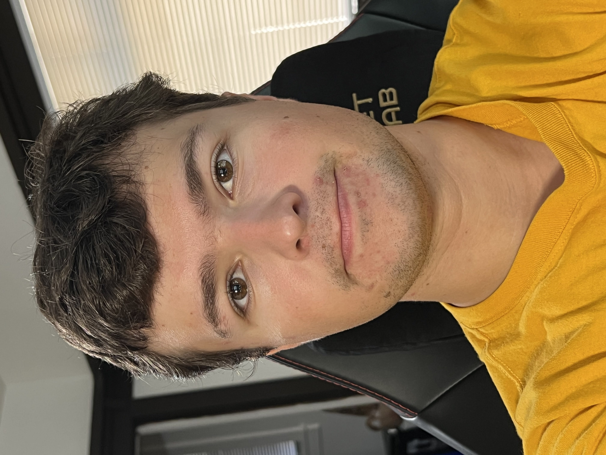
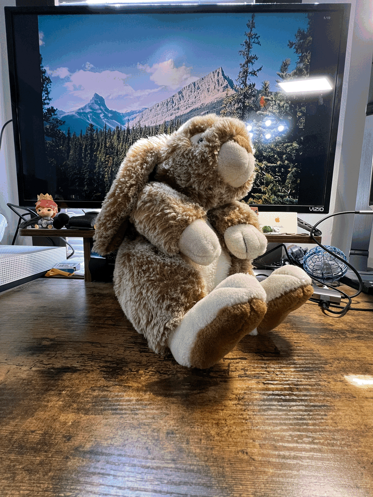

Part 1: Selfie — The Wrong Way vs. The Right Way
Take a close-up selfie (wide angle, near the face). Then step back several feet, zoom in, and frame the face to the same size. The second portrait should look more flattering (less perspective distortion).


Why this happens
Perspective distortion depends on camera-to-subject distance, not focal length. Stepping back reduces relative size differences (nose vs. ears), then zooming restores framing.
Part 2: Architectural Perspective Compression
First, from far away, zoom in down a long street/walkway and take a photo. Then walk forward, use little/no zoom, and match the framing. The zoomed, far shot should look “flatter” (compressed).


Why it looks compressed
From farther away, sight lines to near and far objects become more parallel, reducing depth cues. Zoom just crops the field of view; the distance change alters perspective.
Part 3: The Dolly Zoom (a.k.a. “Vertigo shot”)
Move the camera backward while zooming in (or forward while zooming out) to keep the subject’s size roughly constant while the background “warps.” Capture 4–8 stills and combine them into a GIF.
- Pick a scene with depth (hallway, shelves, stuffed animals, etc.).
- Start close + wide; step back incrementally while increasing focal length to keep subject size similar.
- Export your frames as an animated GIF.
